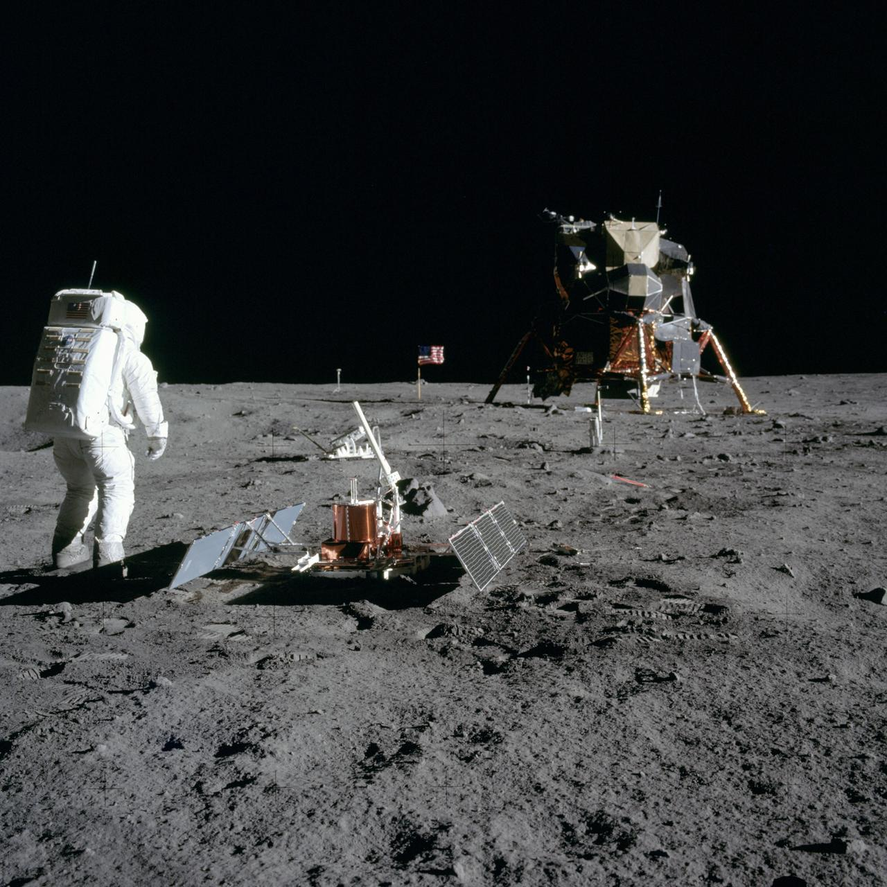
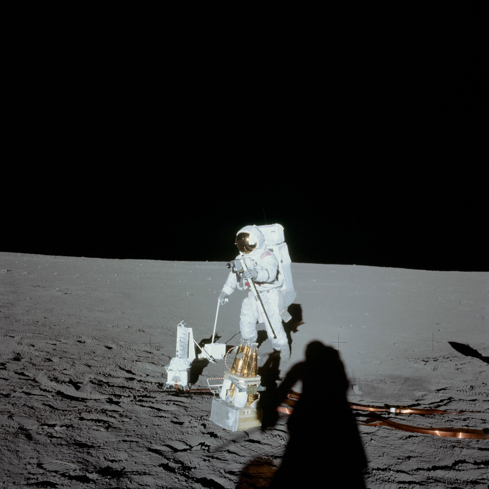
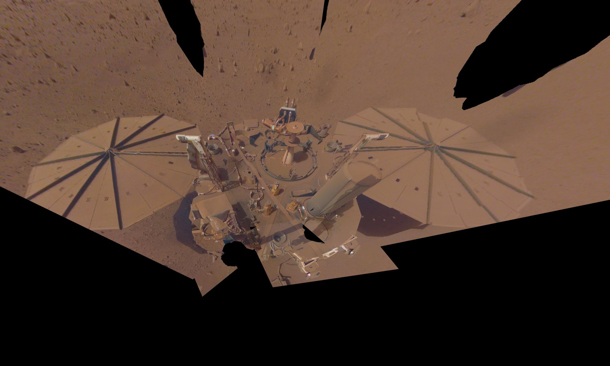
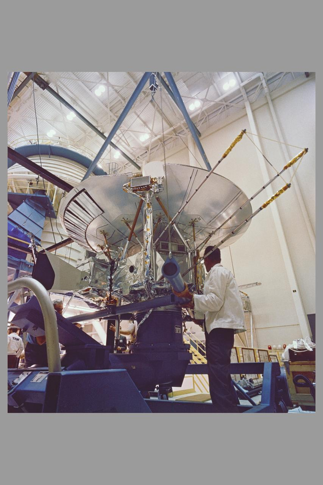
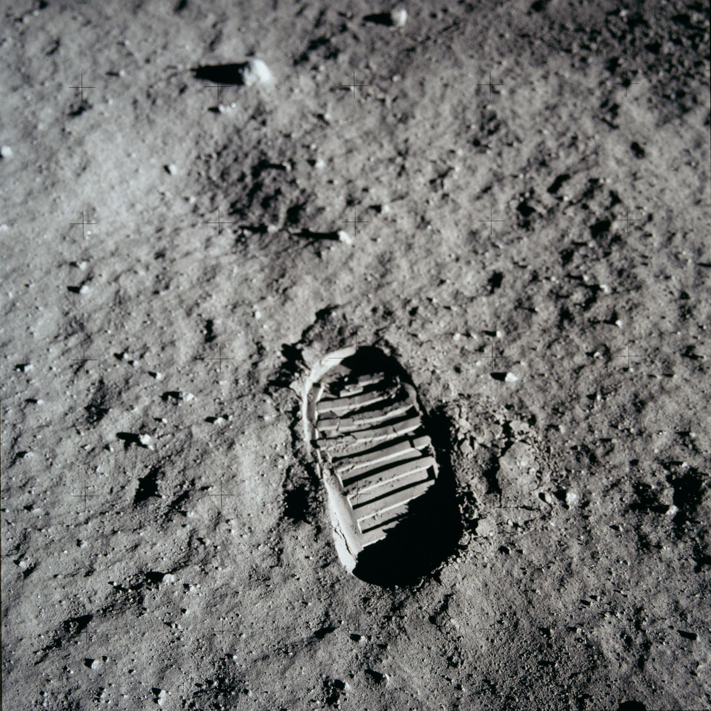
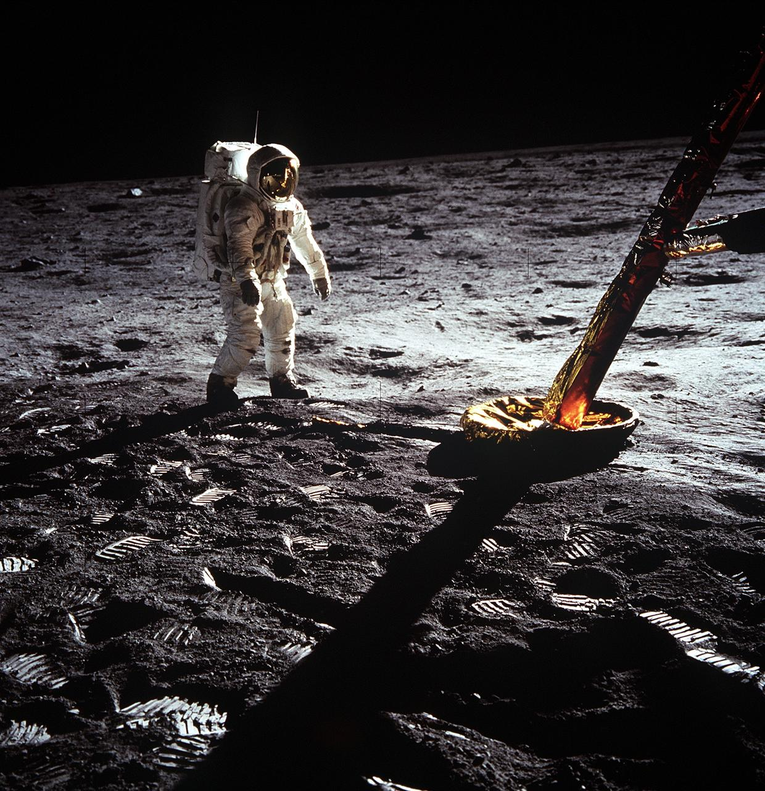
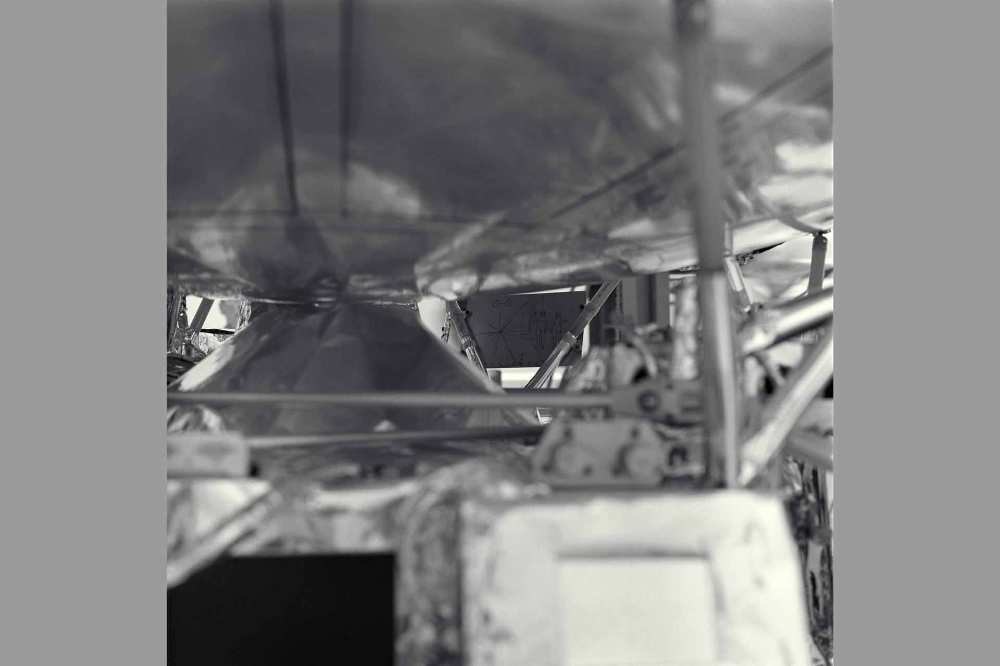

Six machines are still out there.
Each one stopped answering in its own way.
A story for NASA Space Apps Challenge 2026. All sound is synthesized.

Apollo 11 stopped accepting commands on 27 August 1969.

Apollo 12 was shut down on 30 September 1977.

Opportunity was last heard on 10 June 2018, in a dust storm.

InSight made its last contact on 15 December 2022.

Ingenuity's mission ended on 25 January 2024.

Pioneer 10 sent its last signal on 23 January 2003.
It is still going.


20 July 1969
Eagle was the first crewed vehicle to land on the Moon.
The astronauts left a small science station behind. EASEP had a seismometer to feel moonquakes.
Neil Armstrong and Buzz Aldrin were the first people to walk on the Moon. 21.55 kg of lunar rock and soil came home with them. EASEP stayed.
Apollo 11, NASA
EASEP could only run in lunar daylight.
On 27 August 1969 it stopped accepting commands from Earth. The NASA page we used does not say why.
Apollo 12
This one left a whole station.
ALSEP had a seismometer, an ion detector and other instruments wired to a central station. A small nuclear generator powered it with about 70 watts, roughly one bright light bulb.
When the crew's spent lander was crashed into the Moon on purpose, about 60 km away, the station recorded the first artificial moonquake.
It worked for almost eight years. It was shut down on 30 September 1977, along with the other Apollo science stations. The NASA page we used does not say why.
0 days since it was switched off
Mars
Opportunity
A solar-powered robot geologist on wheels, one of two twins.
It was sent to look for signs of past water on Mars.
By studying the rocks, the twins confirmed that water was long standing on the surface of Mars in ancient times.
Then the dust came.
Opportunity last communicated with Earth on 10 June 2018, as a planet-wide dust storm blanketed the place where the solar-powered rover sat.
10 June 2018
The last two images it took. A faint Sun sits near the middle of each.
0 days of silence so far.
Last images from Opportunity. NASA/JPL-Caltech/Cornell/ASU
InSight, Mars
It stayed in one spot and listened to the planet from the inside.
Its final selfie, 24 April 2022. Far more dust than in its first.
Dust covered its solar panels. Two attempts to reach the lander failed, and controllers concluded its batteries had run out of energy. The last contact was 15 December 2022. NASA ended the mission six days later.
InSight, NASA/JPL-Caltech
Ingenuity, Mars
A small helicopter, carried to Mars as a technology demonstration.
It was planned to make no more than five test flights in 30 days.
0 flights
across nearly three years.
On 18 January 2024 it made its last flight. About 1 meter up, it lost contact with the rover that relays its signals.
Later pictures showed one or more rotor blades damaged in landing. NASA ended the mission on 25 January 2024, with the helicopter still upright and in communication.
Perseverance selfie with Ingenuity, 6 April 2021, about 13 feet (3.9 m) from the rover. NASA/JPL-Caltech/MSSS
Now the farthest one.

Pioneer 10
Launched 2 March 1972.
The plaque is the small rectangle in the middle of the frame.
The first spacecraft to fly past Jupiter.
It was designed for 21 months. It lasted more than 30 years.
23 January 2003
Its last, very weak signal, from 7.6 billion miles away.
Its power source had decayed.
On 14 November 2026
About 141 AU from Earth.
A radio message sent now would take about 19.6 hours to get there. The distance is computed by NASA/JPL Horizons. Nobody has heard from it since 2003.
NASA's Deep Space Network did not detect a signal on 7 February 2003.
A final search in March 2006 failed. Pioneer 10 will coast silently toward the red star Aldebaran, about 68 light years away. NASA says it will take over 2 million years.
Our signal, leaving. Nothing comes back.